10 Famous Battles, Ranked by What They Changed
Famous Battles RankedBattles RankedMost Important Battles in History10 Most Important Battles in HistoryBattles That Changed HistoryDecisive Battles
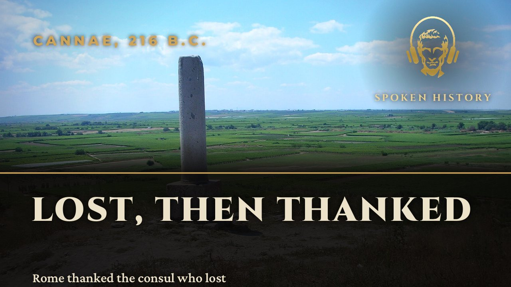
The Roman consul who lost the battle of Cannae came home, and Rome thanked him. Livy says it was because he had not given up on the republic. Hannibal had just beaten his army, and fifteen years later, Rome still won the war. So a famous victory is not always a battle that changed things. I took ten famous battles, and ranked them by one thing: what was different afterwards, and for how long. A ranking is an argument, not a measurement. Where historians disagree, I will say so. Here are the ten, oldest first. Kadesh. Salamis. Gaugamela. Cannae. The Teutoburg Forest. Hastings. Hattin. Ain Jalut. Hakata Bay. And Adwa. I will also say how well we know each one: well documented, partly, or thin. Which one changed the most? We count down from ten.

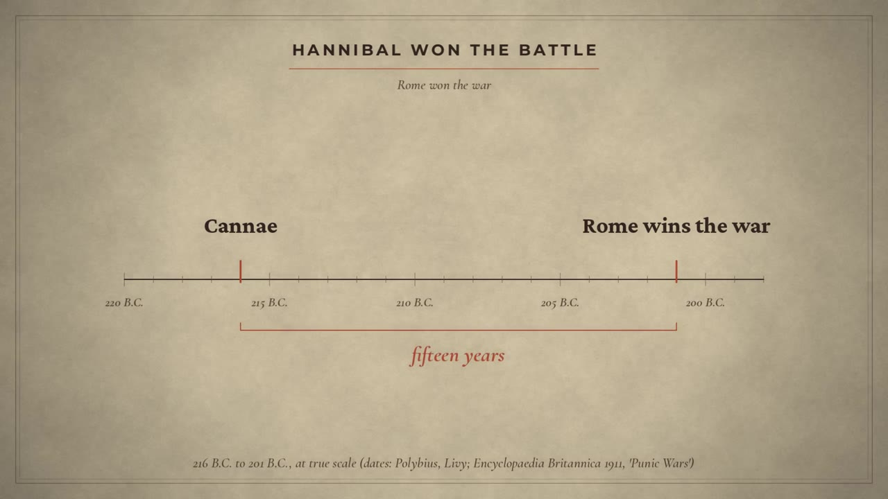
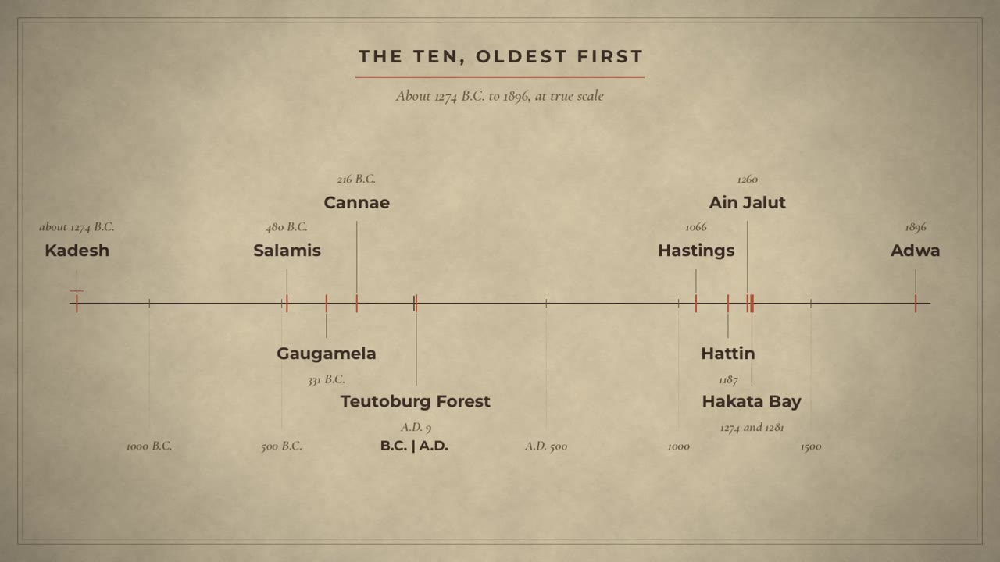
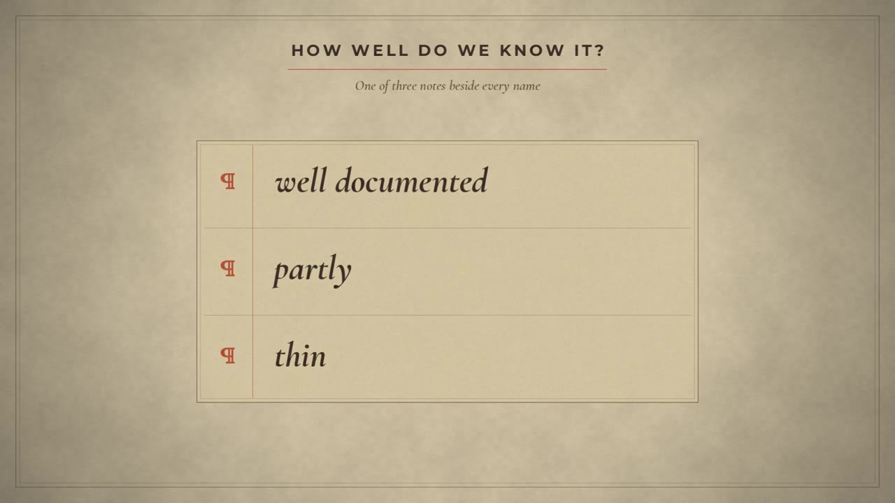
10. Cannae, 216 B.C.
Number ten is the battle we started with. Cannae, southern Italy, 216 B.C. Afterwards, Hannibal's brother had a heap of gold rings poured out in the entrance of the senate house at Carthage. Only Roman knights wore them, he said. Livy tells how, when the consul Varro came home, the Romans thanked him, because he “had not despaired of the republic.” The war went on for fifteen more years, and Rome won it. How well do we know Cannae? Partly. Our two main writers were not yet born, and where exactly it was fought is still argued.
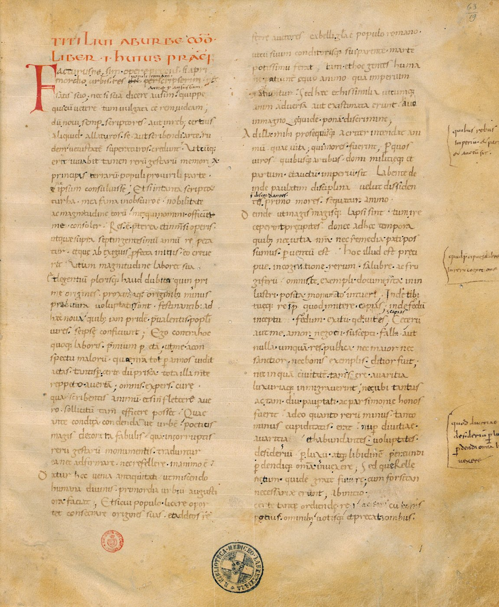
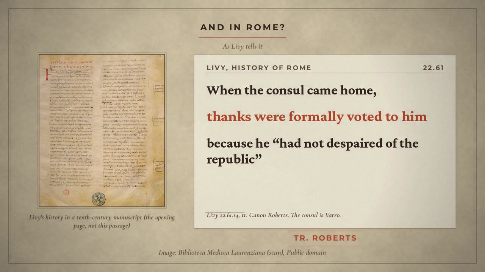
Did you know? After Cannae, Hannibal's brother had a heap of gold rings poured out in the entrance of the senate house at Carthage. Only Roman knights wore them, he said (Livy 23.12).
9. Kadesh, about 1274 B.C.
Number nine goes back a thousand years before Cannae, to a battle both sides said they won. Kadesh, in Syria, about 1274 B.C. Ramesses II had his version carved on his temples. “I charged all countries, while I was alone, my infantry and my chariotry having forsaken me.” Decades later, a Hittite treaty put it in three words: “Muwattalli defeated him.” What changed? Ramesses did not take Kadesh. The war dragged on for about fifteen more years, and ended in a treaty. A copy of that treaty hangs today at the entrance to the United Nations Security Council. How well do we know Kadesh? Partly. Both sides wrote, and we have the day, but every word comes from a palace.
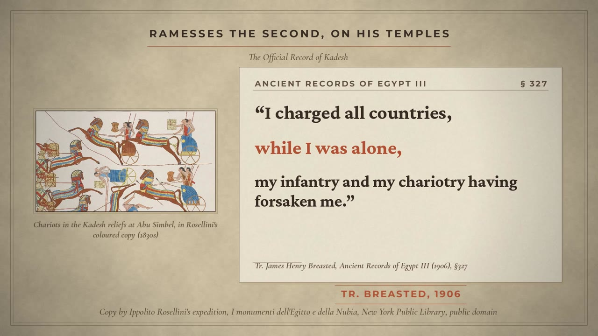
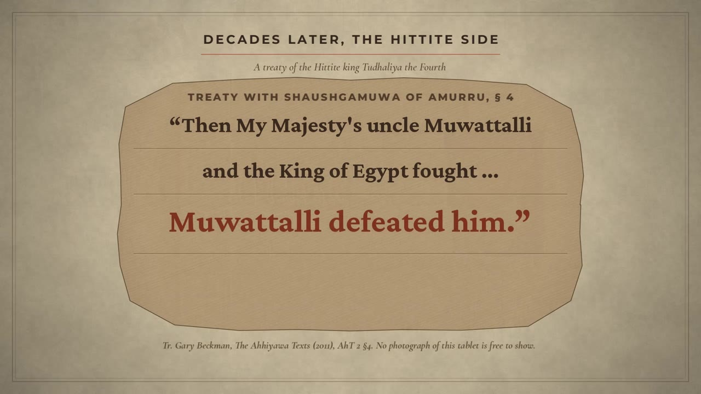
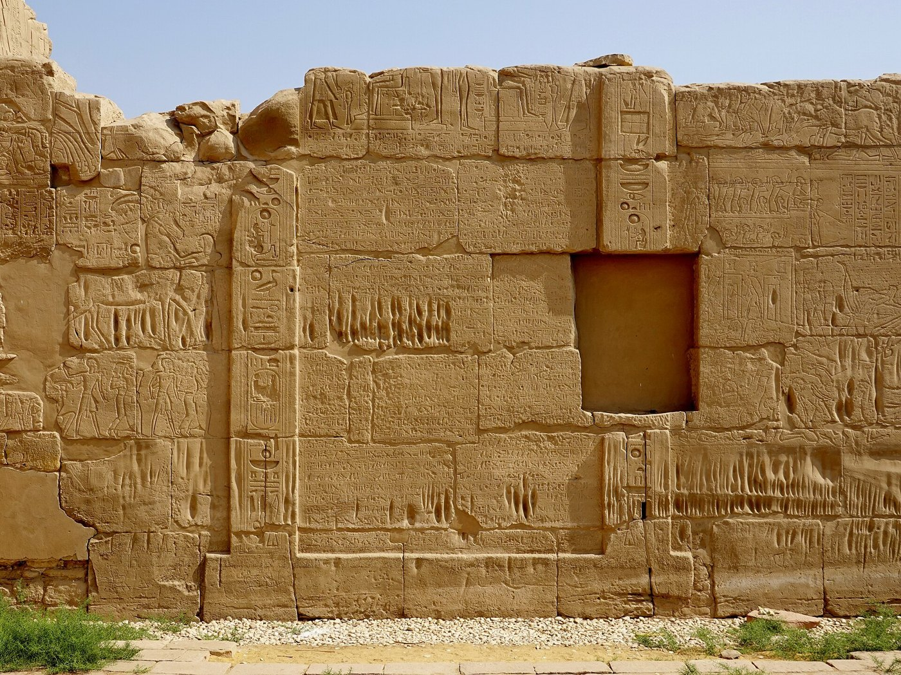
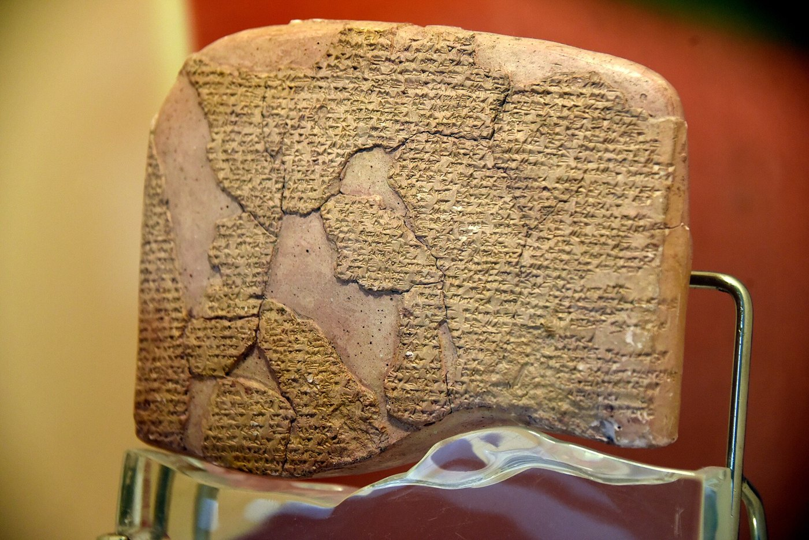
Did you know? A copy of the peace treaty that ended the war hangs at the entrance to the United Nations Security Council in New York, as the historian Trevor Bryce wrote in 2003.
8. Hakata Bay, 1274 and 1281
From one invader who went home with nothing, to another, on the far side of Asia. Number eight. Hakata Bay, Japan, 1274 and 1281. Kublai Khan's fleets came twice. The second time, one survivor said (our rendering): “on the first day of the eighth month, the wind broke the ships.” One samurai, Takezaki Suenaga, sold his horse and saddle to go and ask for his reward. What changed? Mostly, what did not happen. The Mongols were never able to establish a beachhead on Kyushu, writes the historian Thomas Conlan. In 1286, says the history of Kublai's dynasty, he decided to “set Japan aside” (our rendering). How well do we know it? Well documented. A man who was there, records from both sides, and three wrecks confirmed by divers.
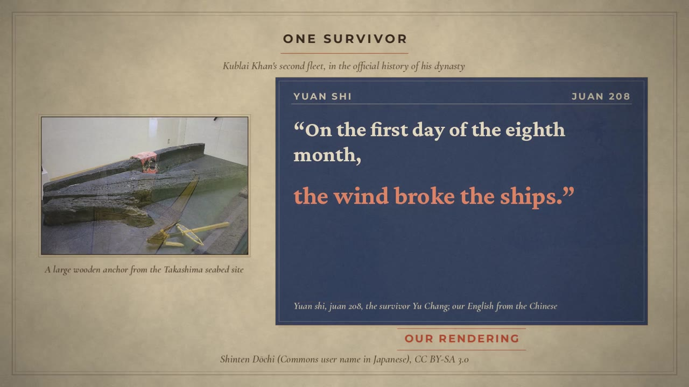
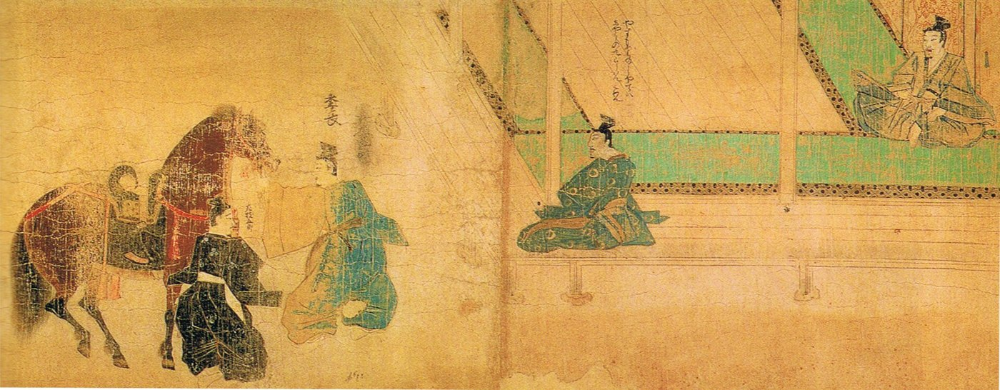
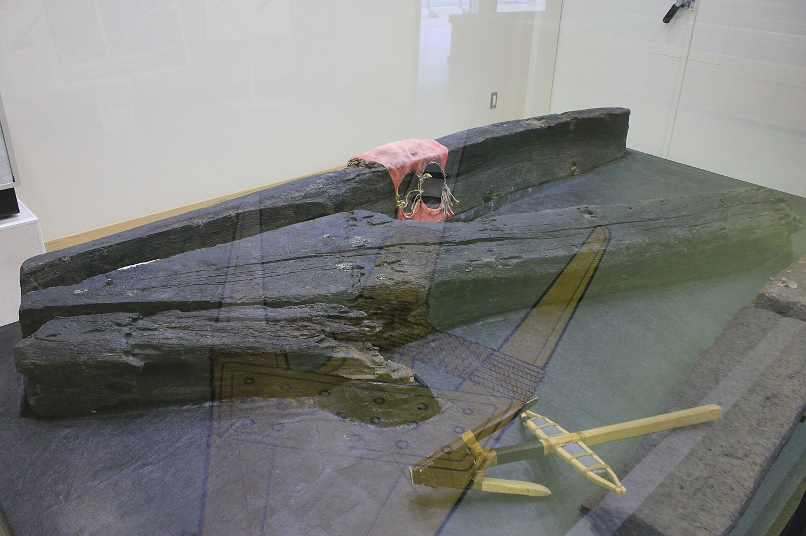
Did you know? To ask for his reward after fighting the Mongols in 1274, the samurai Takezaki Suenaga sold his horse and saddle (his own scrolls, tr. Thomas Conlan).
7. Salamis, 480 B.C.
From Japan back to Greece, and an older invasion by sea. Number seven. Salamis, 480 B.C. The Persians had burned the Acropolis of Athens. Then their fleet was beaten in the strait. Eight years later, the playwright Aeschylus put it on stage: “the sea was hidden from our sight, strewn as it was with wrecks and slaughtered men.” What changed? Afterwards, says Herodotus, Xerxes “resolved on flight,” and went home. But his general Mardonius stayed in Greece with a picked army. The real decision, writes the historian Jona Lendering, came the following year, at Plataea. How well do we know Salamis? Partly. Herodotus wrote some fifty years later, from what people told him, and no Persian account survives.

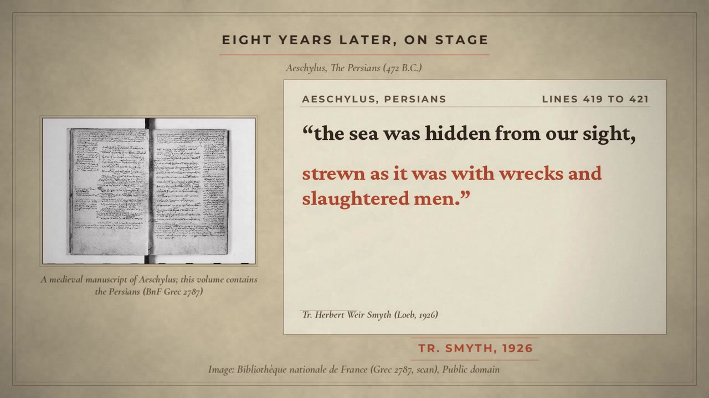
Did you know? Only eight years after Salamis, the playwright Aeschylus put the battle on stage, in The Persians (472 B.C.).
6. Ain Jalut, 1260
Number six brings back the Mongols, fourteen years before Japan, and on land. Ain Jalut, a spring in the Jezreel valley, the third of September, 1260. “If I am killed by your hand, I consider it to be God's act, not yours.” A Persian history written for the Mongols has their general, Kitbuqa, say this as a prisoner. Other chronicles have him killed in the battle. What changed? The Mongols came back into Syria, but held it, says the historian Reuven Amitai, only for months. He calls Ain Jalut “a crucial encounter,” which set the stage for the region's history for many decades. How well do we know it? Partly. Both sides wrote, and we have the day, but no one who was there.

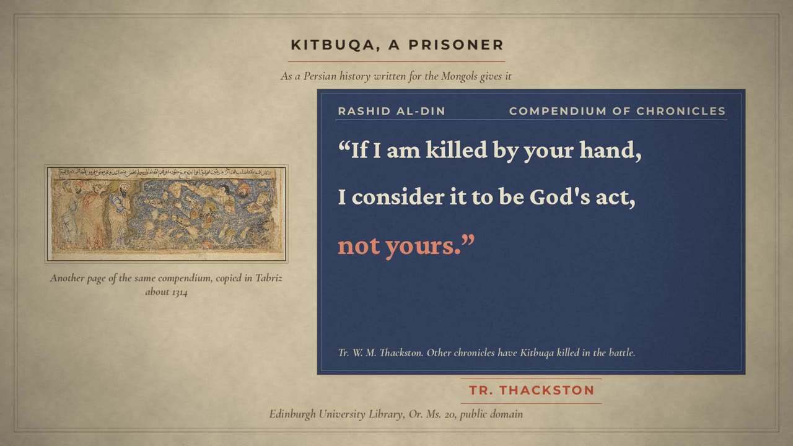
Did you know? Twice the Mongols occupied most of Syria, in 1260 and in 1299 to 1300, and both times, says the historian Reuven Amitai, the conquest lasted only a few months.
5. Adwa, 1896
Number five is the latest battle on the list, and the only one fought in Africa. Adwa, Ethiopia, the first of March, 1896. The emperor Menelik had called his people to arms. In our rendering of his chronicle: “since we must all die, I will not be grieved if I die.” His armies beat the Italian invaders. What changed? Within weeks, writes the historian John Davis, the government in Rome fell. That October, Italy recognised Ethiopia as a sovereign and independent state. Why not higher? Italy invaded again in 1935, and Davis calls Adwa “more like a temporary respite than a true turning point.” How well do we know it? Well documented: the Italian commander's own account, the emperor's chronicle, and the day.

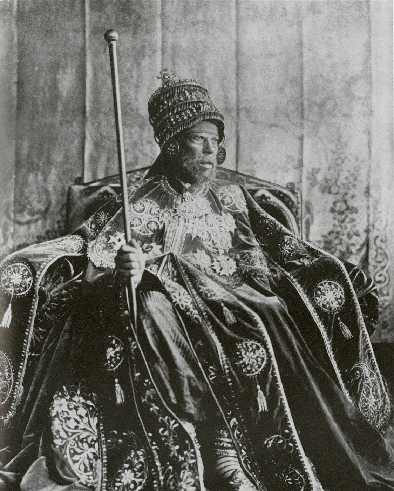
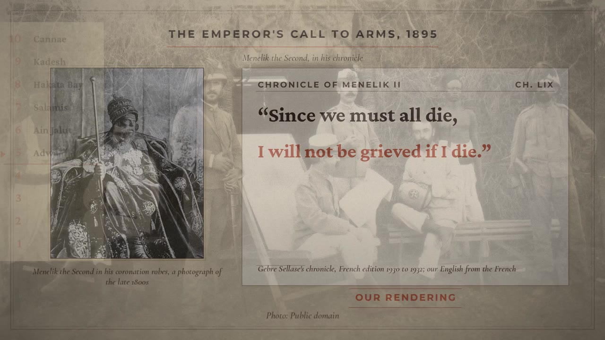
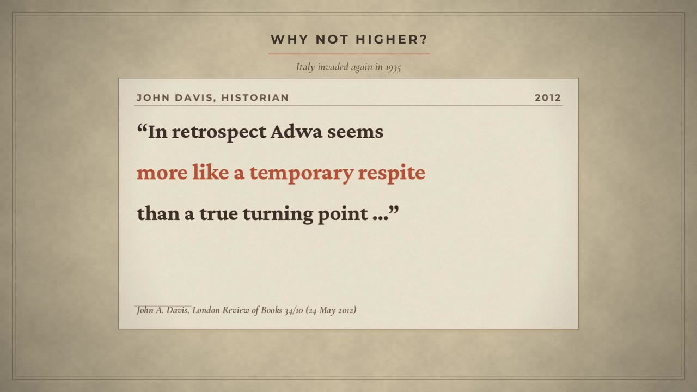
Did you know? Within weeks of Adwa the government in Rome fell, and in October 1896 the Treaty of Addis Ababa recognised Ethiopia as a sovereign and independent state.
4. Teutoburg Forest, A.D. 9
From Africa back to Rome, and a defeat that, people said, made an emperor beat his head against a door. Number four. The Teutoburg Forest, Germany, A.D. 9. Three legions died there with their general, Varus. Six years later, Tacitus says, Roman soldiers found “bleaching bones,” and human skulls nailed to the tree trunks. Augustus, Suetonius reports, would cry: “Quintilius Varus, give me back my legions!” What changed? Rome sent armies back across the Rhine for years, then stopped. In Tacitus' words, “the war, since [Germanicus] had been forbidden to complete it, was assumed to be complete.” How well do we know it? Thin. No one who was there wrote it down, and Kalkriese, where a Roman army did die, may or may not be this battle.


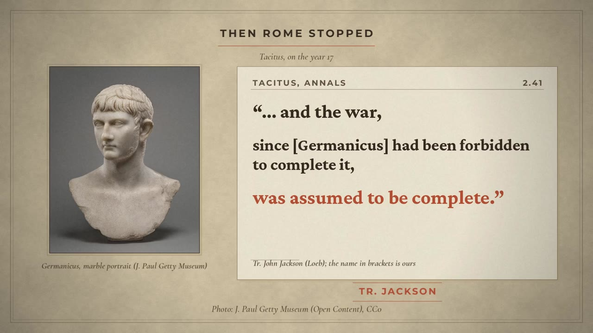
Did you know? Augustus, they say, would sometimes beat his head against a door, crying “Quintilius Varus, give me back my legions!” (Suetonius, Augustus 23).
3. Hattin, 1187
Number three is the battle that cost the crusaders Jerusalem. Hattin, in Galilee, the fourth of July, 1187. “Be quiet; we shall not have beaten them until that tent falls!” Saladin said it to his son, al-Afdal, at the son's first battle, as the son told it. As he spoke, the king's tent fell. What changed? Three months later, Jerusalem surrendered to Saladin. The crusaders held it again only by treaty, from 1229, and lost it for good in 1244. How well do we know it? Well documented. Saladin's secretary rode with the army, a Templar who escaped wrote soon after, and weapons have been found along the march route.

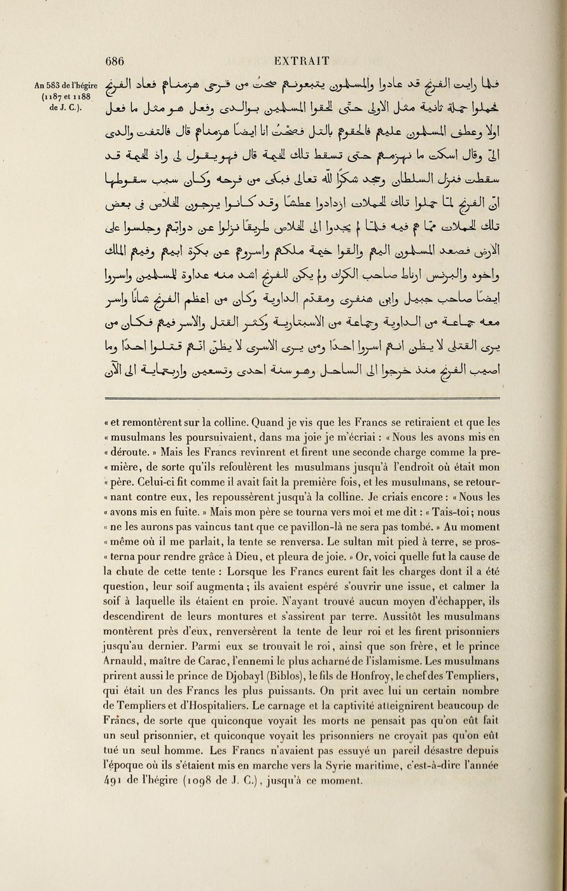
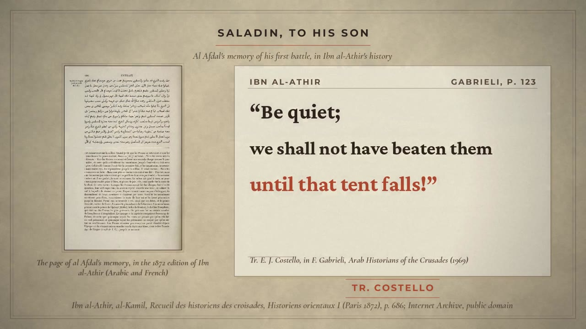
Did you know? Hattin was al-Afdal's first battle, the first that he saw with his own eyes, as he told it to the historian Ibn al-Athir.
2. Gaugamela, 331 B.C.
For number two, back to the ancient world, and a king who lost an empire. Gaugamela, in what is now northern Iraq, 331 B.C. Babylonian scholars kept a diary of the sky. Eleven days before the battle they recorded an eclipse of the moon, and wrote: “deaths and plague.” Then, on the twenty-fourth: “the king of the world [erected his] standard. Opposite each other they fought.” What changed? Darius escaped, Alexander entered Babylon, and nine months later Darius was murdered. But the historian Jona Lendering adds: “Alexander started to reign as an Achaemenid king,” in the old Persian style. How well do we know it? Partly. The histories by Alexander's own officers are lost, and the field has not been found.
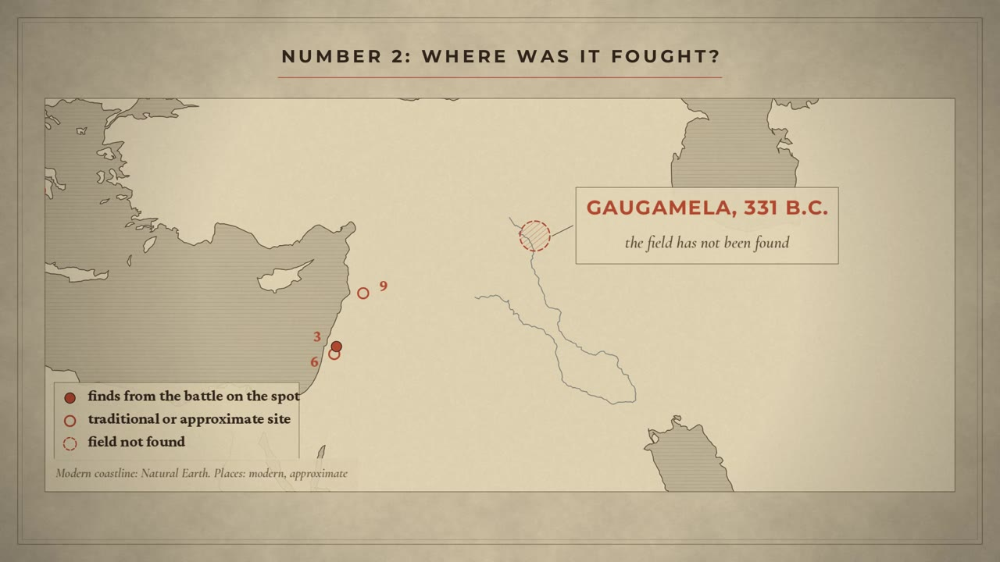
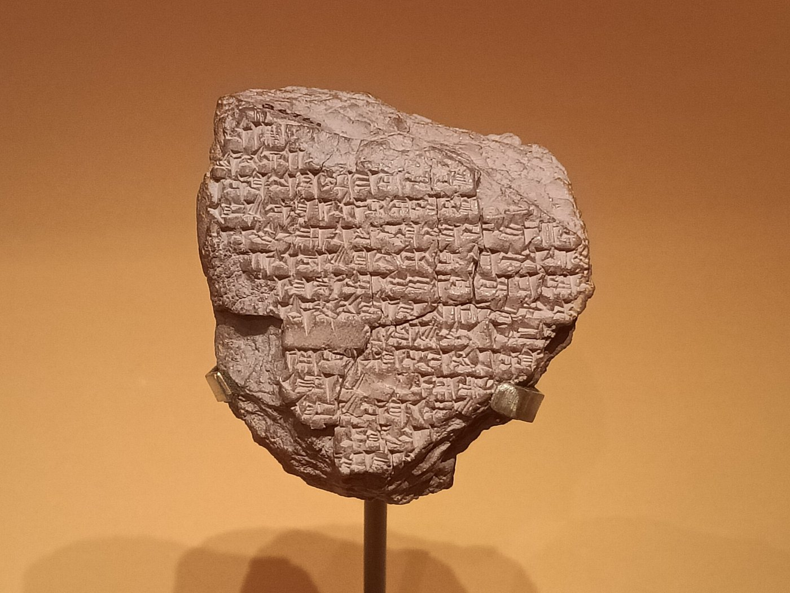
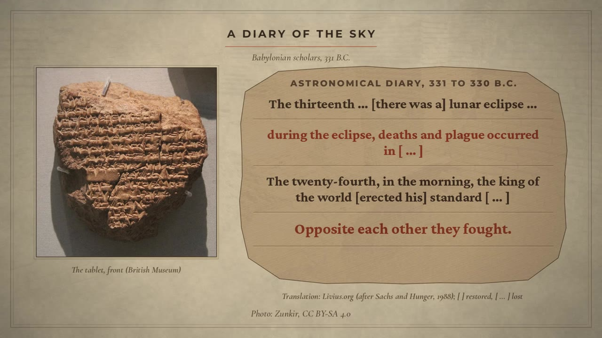
Did you know? Gaugamela is dated by astronomers: a Babylonian diary records an eclipse of the moon, and the battle eleven days later. Plutarch, too, says that on the eleventh night after the eclipse the two armies were in sight of each other.
1. Hastings, 1066
And number one: a battle that replaced a king, and almost all the lords of the land. Hastings, England, the fourteenth of October, 1066. King Harold came against William “at the hoary apple tree,” says the Anglo-Saxon Chronicle. “There King Harold was killed … and the French remained masters of the field.” On Christmas Day, William was crowned. What changed? Twenty years later, by one historian's estimate, the English landholders named in Domesday Book held about four percent of England's landed wealth. The historians Stephen Baxter and Chris Lewis call it “the most comprehensive elite takeover in England's recorded history.” How well do we know it? Partly. Both sides wrote, and we have the day, but no sure eyewitness, and nothing from the battle has been found at the abbey on the site.
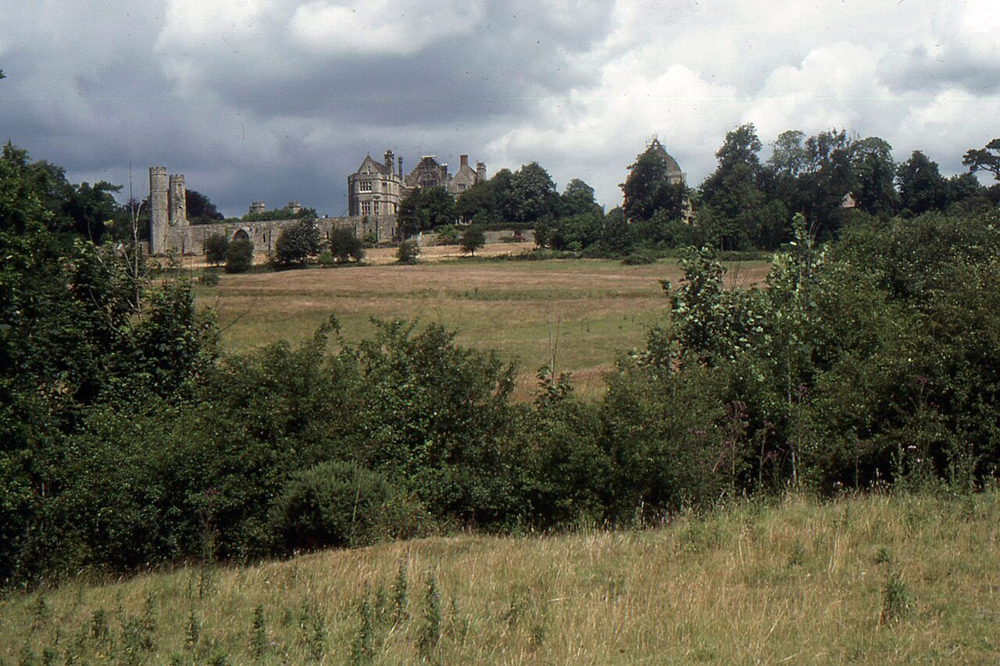
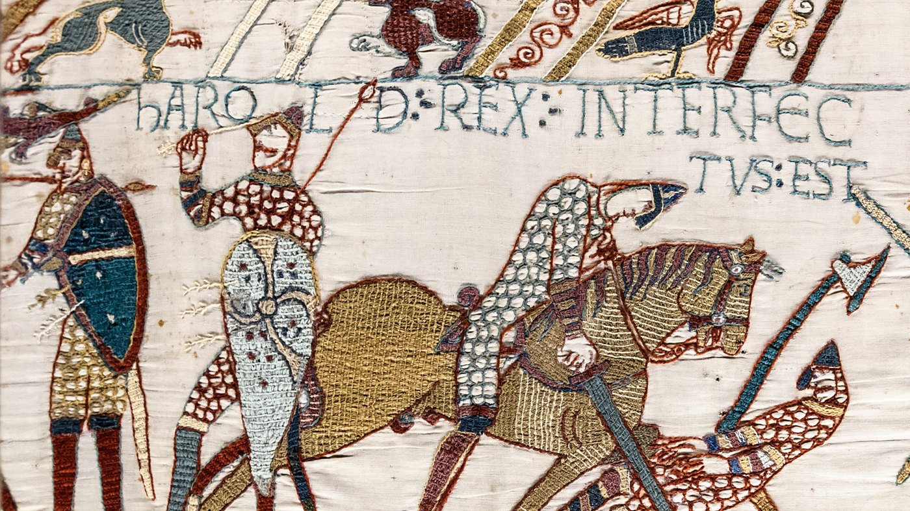
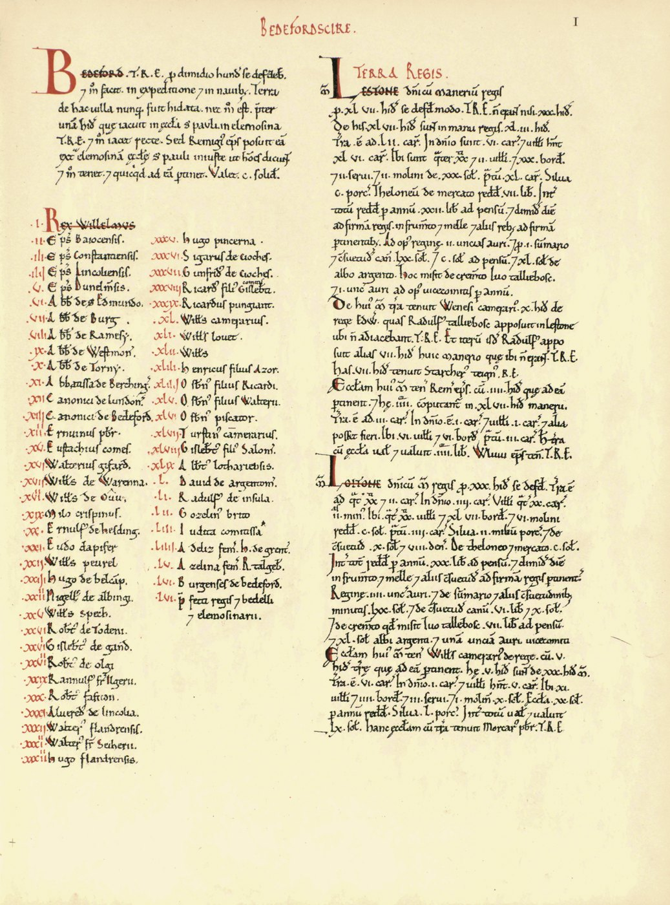
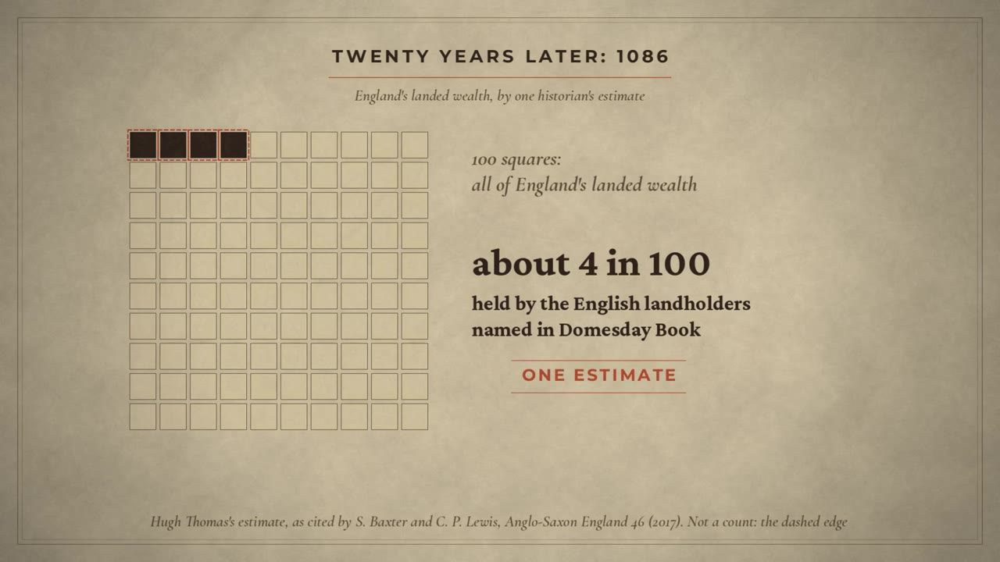
Did you know? Twenty years after Hastings, by Hugh Thomas's estimate, there were between 800 and 1,300 named English landholders in Domesday Book, and between them they held about 4 percent of England's landed wealth.
The ranking, and what would change it
So, ten battles, ranked by what they changed. Ten, Cannae. Nine, Kadesh. Eight, Hakata Bay. Seven, Salamis. Six, Ain Jalut. Five, Adwa. Four, the Teutoburg Forest. Three, Hattin. Two, Gaugamela. One, Hastings. Hastings comes first because its change went deepest: a new king, and new lords on almost all the land. What would move it? Count how much land changed hands, and Gaugamela comes first. Count what did not happen, and Hakata Bay climbs. And the best documented are not the ones at the top: Hattin, Hakata Bay and Adwa have writers who were there. The two at the top we know only in part.
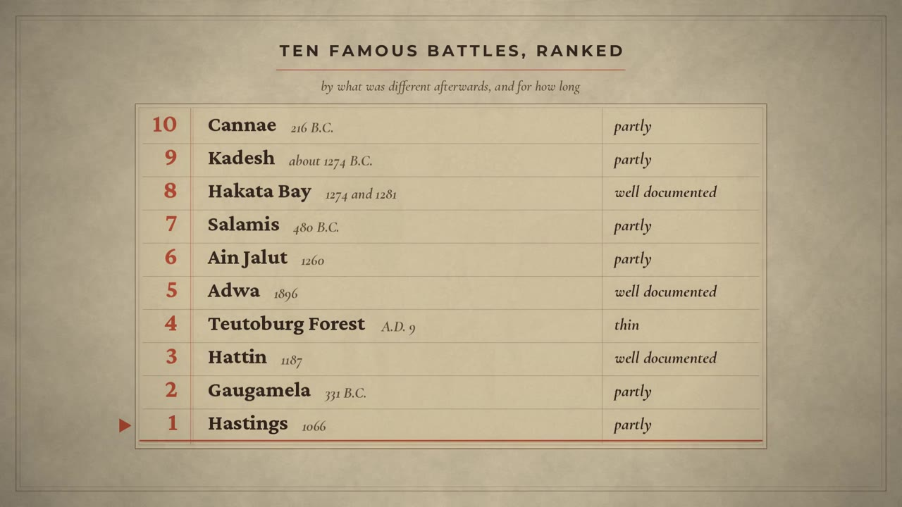
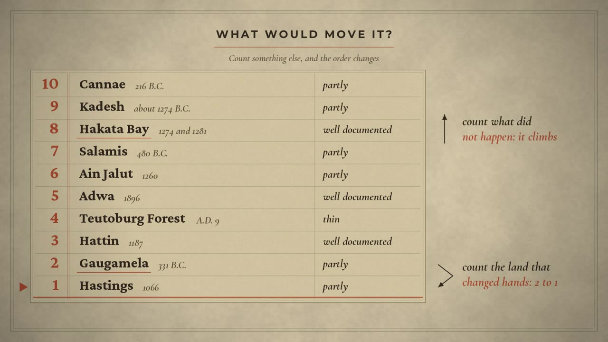
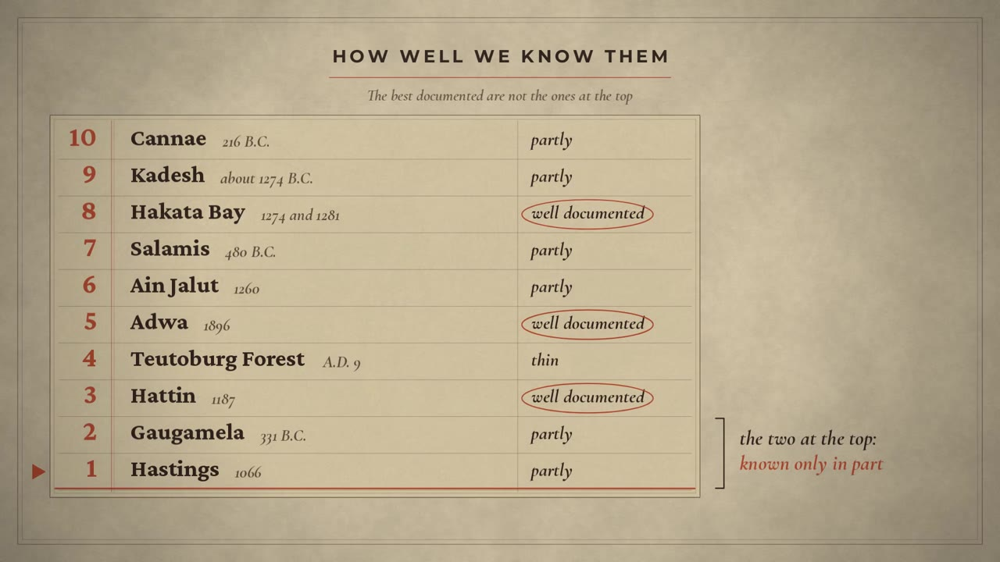
Over to you
Would you put Gaugamela above Hastings? Salamis at number seven, because the real decision came a year later: too low, or fair?
Prefer to watch? The video on YouTube covers the same story with the full animations. Jump to a part:
- 0:00 Ten battles, one question
- 1:12 10. Cannae, 216 B.C.
- 1:51 9. Kadesh, about 1274 B.C.
- 2:43 8. Hakata Bay, 1274 and 1281
- 3:38 7. Salamis, 480 B.C.
- 4:32 6. Ain Jalut, 1260
- 5:27 5. Adwa, 1896
- 6:21 4. Teutoburg Forest, A.D. 9
- 7:17 3. Hattin, 1187
- 8:06 2. Gaugamela, 331 B.C.
- 8:58 1. Hastings, 1066
- 9:53 The ranking, and what would change it
- 10:57 The website
Quick answers
How are the ten battles ranked?
By one thing: what was different afterwards, and for how long. For each battle the video gives the place and the date, what happened in a source's own words where we have them, what changed afterwards as a named source or historian says it, and how well we know it: well documented, partly, or thin. A ranking is an argument, not a measurement. Where historians disagree, the video says so.
Which battle comes first, and why?
Hastings, 1066, because its change went deepest: a new king, and new lords on almost all the land. Twenty years later, by one historian's estimate, the English landholders named in Domesday Book held about four percent of England's landed wealth, and the historians Stephen Baxter and Chris Lewis call the Conquest the most comprehensive elite takeover in England's recorded history. What would move it? Count how much land changed hands, and Gaugamela comes first.
Why does Cannae come last?
Hannibal had just beaten the Roman army. But when the consul Varro came home, Livy says, the Romans thanked him, because he had not despaired of the republic. The war went on for fifteen more years, and Rome won it. So a famous victory is not always a battle that changed things.
Why is Salamis only number seven?
After Salamis, says Herodotus, Xerxes resolved on flight, and went home. But his general Mardonius stayed in Greece with a picked army, and the real decision, writes the historian Jona Lendering, came the following year, at Plataea. Too low, or fair? That is one of the two questions the video asks.
Which of the ten battles do we know best?
Hattin, Hakata Bay and Adwa are well documented: each has a writer who was there. Saladin's secretary rode with the army at Hattin, the samurai Takezaki Suenaga fought the Mongols, and the Italian commander at Adwa wrote his own account. The two at the top, Hastings and Gaugamela, we know only in part, and the Teutoburg Forest is thin: no one who was there wrote it down.
Where it happened
- Hastings: Battle Abbey, on the traditional site (A.D. 1066): Number one. By tradition the English stood on the hill where the abbey was later built; nothing from the battle has been found at the abbey (English Heritage).
- Gaugamela, northern Iraq (field not found) (331 B.C.): Number two. The point marks only the region: the field has not been found.
- Horns of Hattin, above the Sea of Galilee (A.D. 1187): Number three. The battle of 4 July 1187; weapons have been found along the march route.
- Kalkriese, Germany (A.D. 9): Number four, the Teutoburg Forest. A Roman army did die at Kalkriese; whether it is the battle of A.D. 9 is disputed.
- Adwa, Ethiopia (A.D. 1896): Number five. The battle of 1 March 1896, in the hills near the town.
- Ain Jalut (Ma'ayan Harod), at the foot of Mount Gilboa (A.D. 1260): Number six. The spring in the Jezreel valley; the battle of 3 September 1260.
- The strait of Salamis, Greece (480 B.C.): Number seven. The sea battle of 480 B.C.
- Takashima, Imari Bay (Hakata Bay battles) (A.D. 1281): Number eight. Divers have confirmed three wrecks of the 1281 invasion fleet off the island; the first invasion came to Hakata Bay in 1274.
- Kadesh on the Orontes (Tell Nebi Mend), Syria (1274 B.C.): Number nine. The year B.C. depends on the chronology, so about 1274 B.C.
- Cannae, the hill of Canne by the Ofanto (216 B.C.): Number ten. The traditional site; where exactly the battle was fought is still argued.
Sources
Ancient writers and modern work
This special ranks ten battles by one question: what was different afterwards, and for how long. The order is our argument, not a measurement, and the
video says so. For each battle it also says how well we know what happened (well documented, partly, or thin) and why. Seven of the ten battles have their
own episode on this channel (Kadesh, Salamis, Cannae, the Teutoburg Forest, Hattin, Ain Jalut, Hakata Bay), and the sources for them were read and
fact-checked there; we list the ones this video uses and name the episode. Other pages were read on 21 or 22 November 2026. Excerpts and page numbers are
in the episode's `research/` folder. "Abstract only" and "not opened" are said where they apply.
Kadesh, about 1274 B.C.
(https://archive.org/download/ancientrecordsof03brea/ancientrecordsof03brea_djvu.txt). Used: §327, the Official Record, "I charged all countries,
while I was alone, my infantry and my chariotry having forsaken me"; §317, the date "Year 5, third month of the third season, day 9"; note to §315,
"Even the Poem makes no claim that Ramses captured Kadesh"; §367, "After possibly fifteen years of warfare in Syria, Ramses II consents to a peace";
§§370 to 372, the treaty of Year 21.
Amurru: "Muwattalli defeated him" (read and fact-checked in our Kadesh episode).
entrance to the Security Council of the United Nations in New York" (read in our Kadesh episode; that it still hangs there was not checked on a UN page).
"fifteen years after Kadesh", used for the approximate B.C. year; "The Egyptians eventually retreated without capturing their strategic objectives".
Salamis, 480 B.C.
8.113 (Mardonius chose the Immortals and picked men to stay in Greece; read 22 November 2026, Perseus), 7.137 with Godley's note (Herodotus writing
about 430). The 300,000 men of 8.113 are not used. Most were read and fact-checked in our Salamis episode.
it was with wrecks and slaughtered men." The date of the play, 472 B.C.: Diotima, "Aeschylus, Persians: Introductory Remarks" (teaching PDF);
University of Vermont course notes; a Cambridge book chapter seen only as a search snippet. The ancient hypothesis that dates it was NOT opened.
Greece* (Brill 2025), pp. 72 to 91, open access: "a noticeable absence of independent Persian sources" (p. 73).
Gaugamela, 331 B.C.
Lendering; literature: Sachs and Hunger 1988, van der Spek 2003). Quoted: the eclipse and "deaths and plague"; "the king of the world [erected his]
standard ... Opposite each other they fought"; Alexander "came into Babylon". Sachs and Hunger's own edition was NOT opened. The line about the king
and his troops is read two ways (van der Spek 2003; Rollinger and Ruffing 2012, via Sean Manning) and is not used.
survives).
Seleucid empire was a continuation of the Achaemenid empire").
Jagiellonian University press page on the project ("its precise location remains unknown"; "Alexander's decisive victory led to the fall of the
200-year-old Persian Empire").
Adwa, 1896
(archive.org `mapofafricabytre02hert`). Used: Art. III "Recognition by Italy of Ethiopia as a Sovereign and Independent State" (Hertslet's summary
heading) and the dating clause.
government fell"; Mussolini's invasion in 1935; Adwa "more like a temporary respite than a true turning point".
proclamation (quoted in our English rendering).
Hastings, 1066
Manuscripts blog, 13 October 2016: "the hoary apple tree", "There King Harold was killed", "the French remained masters of the field"; the crowning on
Christmas Day. Also Hudson's judgement that there is "no particular reason to believe this Anglo-Saxon chronicler was an eyewitness".
403; the authors' manuscript in the Oxford Research Archive (ora.ox.ac.uk, uuid c7b7a6ba-b25a-4085-9557-559348cccac6), read 22 November 2026. Used: the
Conquest "resulted in the most comprehensive elite takeover in England's recorded history" (first page); Hugh Thomas's estimate that the 800 to 1,300
named English landholders of 1086 held "about 4%" of England's landed wealth (page numbered 20); "King William assigned 90% of the wealth of conquered
England to about 150 people" (PDF page 25). Hugh Thomas's own book was NOT read; his estimate is given as Baxter and Lewis report it.
Our battle episodes (sources read and fact-checked there)
Encyclopaedia Britannica 11th ed. (1911), "Punic Wars" (Wikisource): the war of 218 to 201 B.C.
'Atiqot 111 (2023). Also: Ernest Barker, Encyclopaedia Britannica 11th ed. (1911), "Crusades" (Wikisource): Jerusalem in Christian hands again from
1229 to 1244.
Kalkriese excavation reports and the 2026 metal study.
Reuven Amitai, *JSAI* 50 (2021) (abstract): "a crucial encounter".
beachhead on Kyushu"); the Yuan history, juan 208 (our rendering); the Takashima wreck reports.
Image credits
- Photo: Jörg Schulz, CC BY-SA 3.0
- Image: Biblioteca Medicea Laurenziana (scan), Public domain
- Photo: Sharon Hahn Darlin, CC BY 2.0
- Photo: maxzocca, CC BY-SA 3.0
- Photo: Myrabella, public domain (PD-Art, photo released CC0)
- Photo: AVRAMGR, CC BY-SA 4.0
- Photo: Horcrux92, CC BY-SA 4.0
- Composite: Spoken History, from The Metropolitan Museum of Art (CC0)
- Photo: Jorge Láscar from Melbourne, Australia, CC BY 2.0
- Photo: Olaf Tausch, CC BY 3.0
- Photo: Warren LeMay, CC0
- Photo: Olaf Tausch, CC BY 3.0
- Photo: Osama Shukir Muhammed Amin FRCP(Glasg), CC BY-SA 4.0
- Photo: BabelStone, CC BY-SA 3.0
- Public domain
- Hirho, CC BY-SA 4.0
- Equietern, CC BY-SA 3.0
- Public domain
- Saigen Jiro, CC0
- Public domain
- 震天動地, CC BY-SA 3.0
- Photo: Earth Science and Remote Sensing Unit, Lyndon B. Johnson Space Center, Public domain
- Photo: Jona Lendering, CC0
- Photo: George E. Koronaios, CC0
- Photo: CC0
- Photo: Isabeau, CC BY-SA 4.0
- Photo: George E. Koronaios, CC BY-SA 4.0
- Staatsbibliothek zu Berlin, Diez Albums, public domain
- Photo: Aaadir, CC0
- Photo: Tomisti, CC BY-SA 3.0
- Photo: Bernard Gagnon, CC BY-SA 3.0
- American Numismatic Society, CC0
- Photo: Jean-Michel Moullec, CC BY 2.0
- Photo: Jnyssen, CC BY-SA 4.0
- Photo: Mahderey, CC BY-SA 4.0
- Photo: Public domain
- Image: Process print by Meisenbach, after Henri Lanos, after John Fortune Nott, CC BY 4.0
- Photo: Marie-Lan Nguyen, CC BY 2.5
- Photo: Corradox, CC BY-SA 3.0
- Photo: Heiko Fischer, CC BY-SA 4.0
- Photo: J. Paul Getty Museum (Open Content), CC0
- Photo: Carole Raddato, CC BY-SA 2.0
- Photo: Radoslaw Botev, CC BY 3.0 PL
- Photo: Zeromancer44, CC BY-SA 3.0
- Bibliotheque nationale de France, public domain
- Photo: 22mil, CC BY-SA 4.0
- Photo: Brigade Piron, CC BY-SA 4.0
- Photo: Osama Shukir Muhammed Amin FRCP(Glasg), CC BY-SA 4.0
- Photo: CC0
- Photo: Christopher Hilton, CC BY-SA 2.0
- Photo: Myrabella, public domain (PD-Art, photo released CC0)
- Great Domesday Book, Bedfordshire, first page (facsimile). Public domain
- Photo: Université de Caen Normandie, CNRS, ENSICAEN, after the 2017 photo campaign of La Fabrique de patrimoines en Normandie; public domain (PD-Art)
- Photo: Colin Park, CC BY-SA 2.0
- Photo: Université de Caen Normandie, CNRS, ENSICAEN, after the 2017 photo campaign of La Fabrique de patrimoines en Normandie; public domain (PD-Art)
- Photo: Myrabella, public domain (PD-Art, photo released CC0)
- Copy by Ippolito Rosellini's expedition, I monumenti dell'Egitto e della Nubia, New York Public Library, public domain
- Animations, maps and diagrams: original work, Spoken History. Map data: Natural Earth, public domain.
- Music: Handel - Suite Vol.1 No. 2 in F major HWV 427 - 1. Adagio: (See Musopen for author information); released to the public domain by Musopen (PD-author on the Commons file page)
- Music: Brahms - Symphony No. 4 in E minor, Op. 98 - II. Andante moderato (Musopen Symphony): Johannes Brahms; released to the public domain by Musopen (PD-author on the Commons file page)
- Music: Beethoven - String Quartet No. 6 in B flat major, Op. 18 No. 6 - II. Adagio, ma non troppo (Musopen String Quartet): Ludwig van Beethoven; released to the public domain by Musopen (PD-author on the Commons file page)
- Music: Beethoven - String Quartet No. 6 in B flat major, Op. 18 No. 6 - IV. La malinconia (Musopen String Quartet): Ludwig van Beethoven; released to the public domain by Musopen (PD-author on the Commons file page)
- Music: Mozart - String Quartet No. 15 in D minor, K421 - II. Andante (Musopen String Quartet): Wolfgang Amadeus Mozart; released to the public domain by Musopen (PD-author on the Commons file page)
- Music: NYCP Tchaikovsky Andante cantabile: Pyotr Ilyich Tchaikovsky, performed by New York Classical Players; CC-BY (YouTube CC-BY), credit required
Transcript
Read the full narration
Ten Battles Ranked. What each one really changed.. The Roman consul who lost the battle of Cannae came home, and Rome thanked him. Livy says it was because he had not given up on the republic. Hannibal had just beaten his army, and fifteen years later, Rome still won the war. So a famous victory is not always a battle that changed things. I took ten famous battles, and ranked them by one thing: what was different afterwards, and for how long. A ranking is an argument, not a measurement. Where historians disagree, I will say so. Here are the ten, oldest first. Kadesh. Salamis. Gaugamela. Cannae. The Teutoburg Forest. Hastings. Hattin. Ain Jalut. Hakata Bay. And Adwa. I will also say how well we know each one: well documented, partly, or thin. Which one changed the most? We count down from ten. Number ten is the battle we started with. Cannae, southern Italy, 216 B.C. Afterwards, Hannibal's brother had a heap of gold rings poured out in the entrance of the senate house at Carthage. Only Roman knights wore them, he said. Livy tells how, when the consul Varro came home, the Romans thanked him, because he had not despaired of the republic. The war went on for fifteen more years, and Rome won it. How well do we know Cannae? Partly. Our two main writers were not yet born, and where exactly it was fought is still argued. Number nine goes back a thousand years before Cannae, to a battle both sides said they won. Kadesh, in Syria, about 1274 B.C. Ramesses the Second had his version carved on his temples. I charged all countries, while I was alone, my infantry and my chariotry having forsaken me. Decades later, a Hittite treaty put it in three words: Muwattalli defeated him. What changed? Ramesses did not take Kadesh. The war dragged on for about fifteen more years, and ended in a treaty. A copy of that treaty hangs today at the entrance to the United Nations Security Council. How well do we know Kadesh? Partly. Both sides wrote, and we have the day, but every word comes from a palace. From one invader who went home with nothing, to another, on the far side of Asia. Number eight. Hakata Bay, Japan, 1274 and 1281. Kublai Khan's fleets came twice. The second time, one survivor said: on the first day of the eighth month, the wind broke the ships. One samurai, Takezaki Suenaga, sold his horse and saddle to go and ask for his reward. What changed? Mostly, what did not happen. The Mongols were never able to establish a beachhead on Kyushu, writes the historian Thomas Conlan. In 1286, says the history of Kublai's dynasty, he decided to set Japan aside. How well do we know it? Well documented. A man who was there, records from both sides, and three wrecks confirmed by divers. From Japan back to Greece, and an older invasion by sea. Number seven. Salamis, 480 B.C. The Persians had burned the Acropolis of Athens. Then their fleet was beaten in the strait. Eight years later, the playwright Aeschylus put it on stage: the sea was hidden from our sight, strewn as it was with wrecks and slaughtered men. What changed? Afterwards, says Herodotus, Xerxes resolved on flight, and went home. But his general Mardonius stayed in Greece with a picked army. The real decision, writes the historian Jona Lendering, came the following year, at Plataea. How well do we know Salamis? Partly. Herodotus wrote some fifty years later, from what people told him, and no Persian account survives. Number six brings back the Mongols, fourteen years before Japan, and on land. Ain Jalut, a spring in the Jezreel valley, the third of September, 1260. If I am killed by your hand, I consider it to be God's act, not yours. A Persian history written for the Mongols has their general, Kitbuqa, say this as a prisoner. Other chronicles have him killed in the battle. What changed? The Mongols came back into Syria, but held it, says the historian Reuven Amitai, only for months. He calls Ain Jalut a crucial encounter, which set the stage for the region's history for many decades. How well do we know it? Partly. Both sides wrote, and we have the day, but no one who was there. If you are enjoying this type of content, please don't forget to subscribe. Number five is the latest battle on the list, and the only one fought in Africa. Adwa, Ethiopia, the first of March, 1896. The emperor Menelik had called his people to arms. In our rendering of his chronicle: since we must all die, I will not be grieved if I die. His armies beat the Italian invaders. What changed? Within weeks, writes the historian John Davis, the government in Rome fell. That October, Italy recognised Ethiopia as a sovereign and independent state. Why not higher? Italy invaded again in 1935, and Davis calls Adwa more like a temporary respite than a true turning point. How well do we know it? Well documented: the Italian commander's own account, the emperor's chronicle, and the day. From Africa back to Rome, and a defeat that, people said, made an emperor beat his head against a door. Number four. The Teutoburg Forest, Germany, A.D. 9. Three legions died there with their general, Varus. Six years later, Tacitus says, Roman soldiers found bleaching bones, and human skulls nailed to the tree trunks. Augustus, Suetonius reports, would cry: Quintilius Varus, give me back my legions! What changed? Rome sent armies back across the Rhine for years, then stopped. In Tacitus' words, the war, since [Germanicus] had been forbidden to complete it, was assumed to be complete. How well do we know it? Thin. No one who was there wrote it down, and Kalkriese, where a Roman army did die, may or may not be this battle. Number three is the battle that cost the crusaders Jerusalem. Hattin, in Galilee, the fourth of July, 1187. Be quiet. We shall not have beaten them until that tent falls. Saladin said it to his son, al Afdal, at the son's first battle, as the son told it. As he spoke, the king's tent fell. What changed? Three months later, Jerusalem surrendered to Saladin. The crusaders held it again only by treaty, from 1229, and lost it for good in 1244. How well do we know it? Well documented. Saladin's secretary rode with the army, a Templar who escaped wrote soon after, and weapons have been found along the march route. For number two, back to the ancient world, and a king who lost an empire. Gaugamela, in what is now northern Iraq, 331 B.C. Babylonian scholars kept a diary of the sky. Eleven days before the battle they recorded an eclipse of the moon, and wrote: deaths and plague. Then, on the twenty-fourth: the king of the world [erected his] standard. Opposite each other they fought. What changed? Darius escaped, Alexander entered Babylon, and nine months later Darius was murdered. But the historian Jona Lendering adds: Alexander started to reign as an Achaemenid king, in the old Persian style. How well do we know it? Partly. The histories by Alexander's own officers are lost, and the field has not been found. And number one: a battle that replaced a king, and almost all the lords of the land. Hastings, England, the fourteenth of October, 1066. King Harold came against William at the hoary apple tree, says the Anglo Saxon Chronicle. There King Harold was killed … and the French remained masters of the field. On Christmas Day, William was crowned. What changed? Twenty years later, by one historian's estimate, the English landholders named in Domesday Book held about four percent of England's landed wealth. The historians Stephen Baxter and Chris Lewis call it the most comprehensive elite takeover in England's recorded history. How well do we know it? Partly. Both sides wrote, and we have the day, but no sure eyewitness, and nothing from the battle has been found at the abbey on the site. So, ten battles, ranked by what they changed. Ten, Cannae. Nine, Kadesh. Eight, Hakata Bay. Seven, Salamis. Six, Ain Jalut. Five, Adwa. Four, the Teutoburg Forest. Three, Hattin. Two, Gaugamela. One, Hastings. Hastings comes first because its change went deepest: a new king, and new lords on almost all the land. What would move it? Count how much land changed hands, and Gaugamela comes first. Count what did not happen, and Hakata Bay climbs. And the best documented are not the ones at the top: Hattin, Hakata Bay and Adwa have writers who were there. The two at the top we know only in part. Would you put Gaugamela above Hastings? Salamis at number seven, because the real decision came a year later: too low, or fair? Every episode has an article on spoken-history.chronas.org, with every source and every image credit. Open the map to see where each story happened, or drag the slider to pick a period. Pick any topic, and it leads you to every episode that covers it. The link is in the description. If you like history that shows its working, a like and a subscribe help me make more of it. And write me a comment. I read every one. Thanks for watching, and I'll see you in the next one. It's on your screen right now. Tap it, and I'll see you there.
All 17 topics
More episodes

Ramesses II Said He Won the Battle of Kadesh Alone
The Battle of Kadesh, about 1274 B.C., from Ramesses II's own poem, official record and relief captions, and from the Hittite side: the two Bedouin who lied, the beaten scouts, the ambush...
Read the story
Salamis, 480 BC: Xerxes' Scribes Took Names
The Battle of Salamis, 480 B.C., in three records that do not agree: Herodotus, who tells how Xerxes watched from below Mount Aegaleos while his scribes wrote down the names of captains who...
Read the story
Cannae, 216 BC: The Gold Rings Hannibal Sent to Carthage
The Battle of Cannae, 216 B.C., from the ancient writers who tell it: the heap of gold rings Hannibal's brother poured out at Carthage, in four sizes; Polybius and Livy, two witnesses who...
Read the story
Teutoburg Forest, AD 9: What Kalkriese Found
The Battle of the Teutoburg Forest, A.D. 9, and the field at Kalkriese: a Roman mule still wearing its bell under a collapsed bank; what Velleius, Tacitus, Dio, Florus and Suetonius say...
Read the story
Hattin, 1187: The Battle That Lost the True Cross
The Battle of Hattin, 4 July 1187, from the sources on both sides: Saladin's words to his son, "until that tent falls"; Reynald of Chatillon's attack on a caravan during a truce; Tiberias...
Read the story
Ain Jalut, 1260: Slave Soldiers Against the Mongols
The Battle of Ain Jalut, 1260, from the sources on both sides: a captured Mongol general's last words, as a Persian history written for the Mongol court gives them; Hulegu's advance into...
Read the story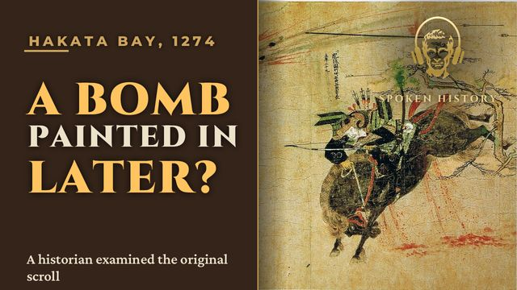
Mongol Invasion of Japan: What Sank Kublai Khan's Fleet?
What sank Kublai Khan's fleet in the Mongol invasions of Japan, from the evidence: a famous scroll picture of a bomb bursting beside a samurai's horse, which the historian Thomas Conlan...
Read the story
The Bayeux Tapestry: What It Really Shows
What the Bayeux Tapestry really shows, read scene by scene and checked against the written sources. It is an embroidery, not a tapestry: dyed wool on nine pieces of linen, 68.3 metres long...
Read the story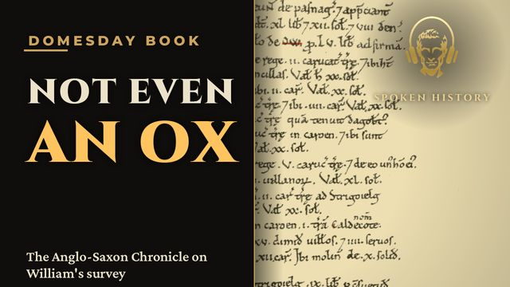
Domesday Book: Why Was It Made?
Domesday Book, the survey William the Conqueror ordered at Gloucester at Christmas 1085: the Danish threat of that winter, how the survey worked, the questions of the Ely inquest, one entry...
Read the story Premiere soon
Premiere soonHow Weapons Evolved: From Sling to Cannon
How weapons evolved from the sling to the cannon, told from the earliest evidence that survives (a find, a text or a picture), not from dates of invention: the bows of Holmegaard and the...
Read the story